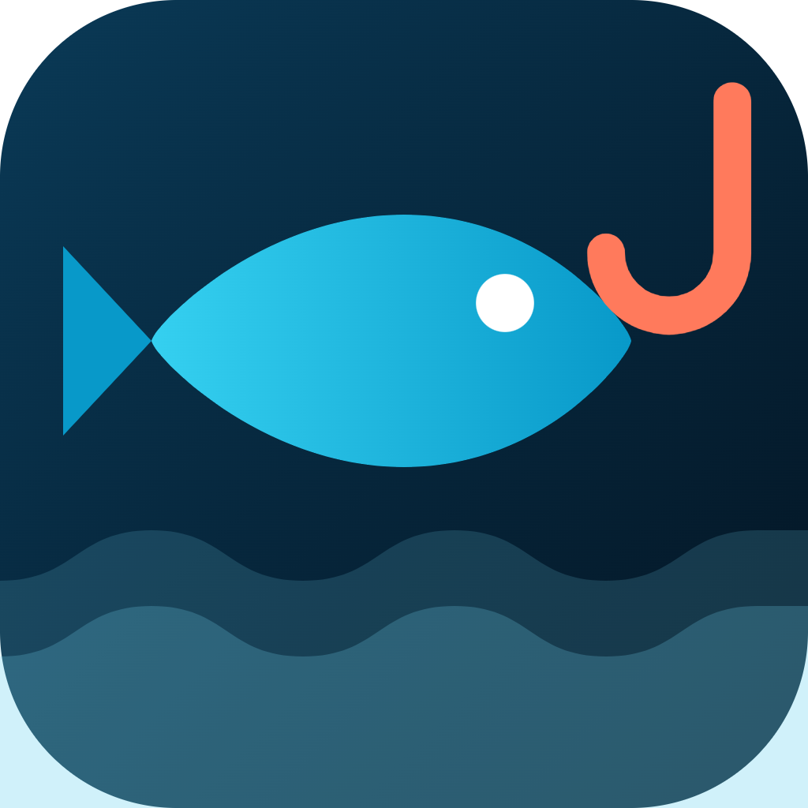

¿Y si supieras las mejores horas para pescar antes de salir de casa?
Te presentamos MiPesca 🎣
desliza →
01 · Pronóstico
Solunar + meteo + mareas en una sola puntuación
De 0 a 100. Miras el número y sabes si merece la pena salir.
02 · Mapa en vivo
Mira quién está pescando ahora mismo
Spots, avisos y actividad en tiempo real, estilo Waze.
03 · Tu colección
Cada captura suma en tu Pokédex
70 especies por descubrir, con rangos y logros.
Gratis. Sin descargas. En tu navegador.
pescando.es
🔗 Link en la bio
Guía rápida
Los 3 momentos en los que los peces pican más
(y cómo saberlos sin hacer cálculos)
desliza →
01
Amanecer y atardecer
Con poca luz, los depredadores se acercan a comer a la orilla. Las dos horas alrededor de la salida y la puesta de sol son oro puro. 🌅
02
Periodos solunares mayores
Cuando la luna pasa justo sobre tu cabeza (o justo bajo tus pies), la actividad se dispara durante unas 2 horas. Es la base de la teoría solunar. 🌙
03
Cambios de marea
El agua en movimiento arrastra comida y activa a los peces. Las horas alrededor de la pleamar y la bajamar suelen ser las mejores. 🌊
La buena noticia
MiPesca lo junta todo en una puntuación de 0 a 100
Para tu spot, hora a hora. Gratis en pescando.es · link en la bio.
Pokédex
¿Cuántas especies llevas ya?
70 especies de nuestras costas y ríos. Cada captura desbloquea su ficha.
Niveles
De Grumete a Leyenda del mar
7 rangos y 16 logros. Pescar ahora tiene partida guardada.
Empieza tu colección hoy
pescando.es
🔗 Link en la bio
Mapa en vivo
El Waze de la pesca
Mira dónde hay gente pescando, guarda tus spots y comparte avisos de zona.
Chat de playa
Habla con los que están en tu misma orilla
Qué está entrando, con qué cebo, cómo está el mar. Cada zona tiene su chat.
Nos vemos en el agua 🌊
pescando.es
🔗 Link en la bio
 MiPesca
MiPesca
Pronóstico del finde
📍 Cádiz · La Caleta
SÁB07:10 – 09:40amanecer + periodo mayor
SÁB20:30 – 22:00atardecer + pleamar
DOM08:00 – 10:20periodo mayor + subida
Tu spot, hora a hora → pescando.es